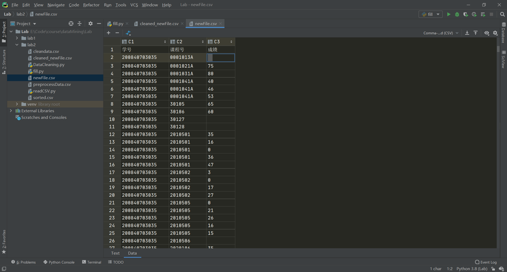
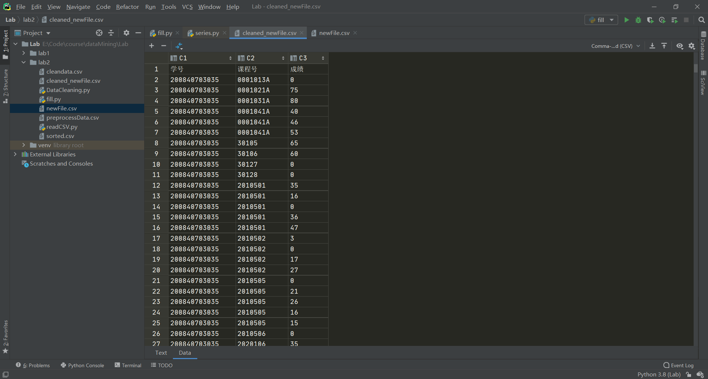

pandas中使用fillna()或者drop()来填充或丢弃包含空值的行和列，但是pandas只认为numpy.nan是空值，实际情况里可能使用空格等空字符来代表空值，这时需要一些特殊处理
原始数据中存在空格

df是一个DataFrame，以DataFrame中的列名为索引可以得到一个Series，其中有一个apply方法可以修改其中的值
apply方法为一个高阶函数，接受一个函数func为参数，对Series中的每个元素调用func
“””
Invoke function on values of Series.Can be ufunc (a NumPy function that applies to the entire Series)
or a Python function that only works on single values.Parameters
func : function
Python function or NumPy ufunc to apply.
convert_dtype : bool, default True
Try to find better dtype for elementwise function results. If
False, leave as dtype=object.
args : tuple
Positional arguments passed to func after the series value.
**kwds
Additional keyword arguments passed to func.Returns
Series or DataFrame
If func returns a Series object the result will be a DataFrame.See Also
Series.map: For element-wise operations.
Series.agg: Only perform aggregating type operations.
Series.transform: Only perform transforming type operations.Examples
Create a series with typical summer temperatures for each city.
s = pd.Series([20, 21, 12],
… index=[‘London’, ‘New York’, ‘Helsinki’])
s
London 20
New York 21
Helsinki 12
dtype: int64Square the values by defining a function and passing it as an
argument toapply().def square(x):
… return x ** 2
s.apply(square)
London 400
New York 441
Helsinki 144
dtype: int64Square the values by passing an anonymous function as an
argument toapply().s.apply(lambda x: x ** 2)
London 400
New York 441
Helsinki 144
dtype: int64Define a custom function that needs additional positional
arguments and pass these additional arguments using theargskeyword.def subtract_custom_value(x, custom_value):
… return x - custom_values.apply(subtract_custom_value, args=(5,))
London 15
New York 16
Helsinki 7
dtype: int64Define a custom function that takes keyword arguments
and pass these arguments toapply.def add_custom_values(x, **kwargs):
… for month in kwargs:
… x += kwargs[month]
… return xs.apply(add_custom_values, june=30, july=20, august=25)
London 95
New York 96
Helsinki 87
dtype: int64Use a function from the Numpy library.
s.apply(np.log)
London 2.995732
New York 3.044522
Helsinki 2.484907
dtype: float64
“””
了解了apply()函数之后，就可以替换原先的空格为np.nan了1
2
3
4
5
6
7
8
9
10
11
12
13
14
15
16
17
18import pandas as pd
import numpy as np
df = pd.read_csv('./newFile.csv', encoding='gbk')
# none_score = (df['成绩'].isnull()) | (df['成绩'].apply(lambda x: str(x).isspace()))
# df_null = df[none_score]
# print(df_null)
#
# df_not_null = df[~none_score]
# data1 = df_not_null
# data1.to_csv('./cleaned_newFile.csv', encoding='utf-8_sig', index=None)
df['成绩'] = df['成绩'].apply(lambda x: np.nan if str(x).isspace() else x)
df = df.fillna(0)
df.to_csv('./cleaned_newFile.csv', encoding='utf-8_sig', index=None)
print('Done')
清洗之后，原本的空值被替换成了0
